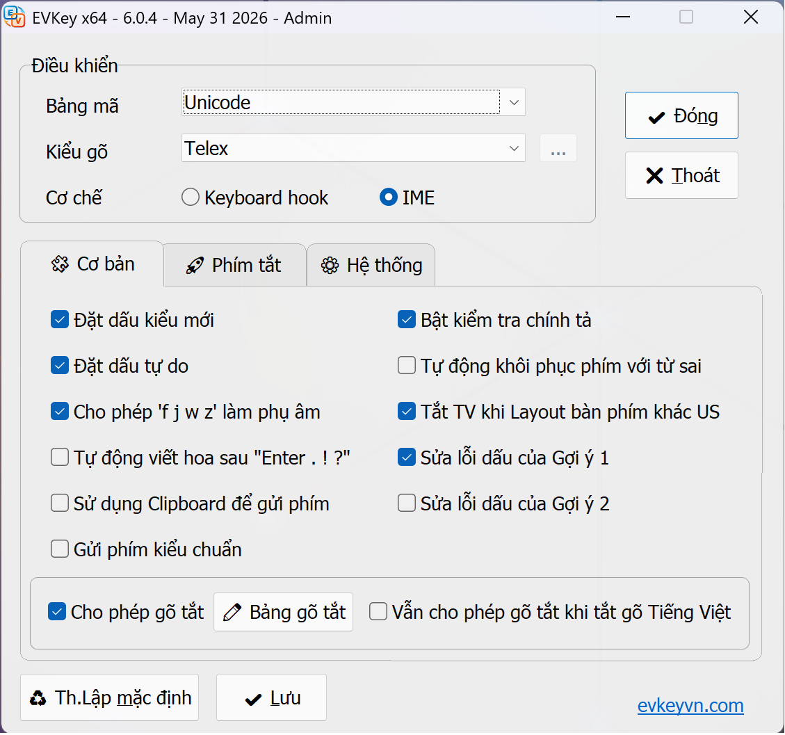
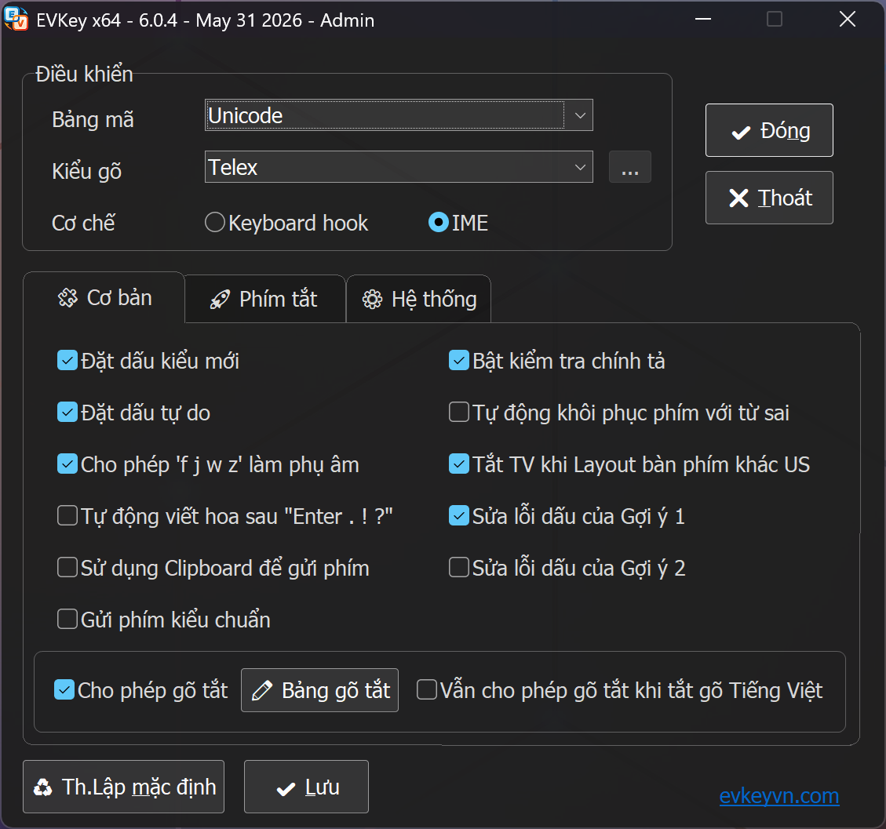

EVKey là gì?
EVKey là bộ gõ tiếng Việt miễn phí dành cho máy tính, hỗ trợ cả Windows và macOS. EVKey giúp bạn gõ tiếng Việt có dấu một cách nhanh, chính xác và ổn định trong mọi ứng dụng — từ trình duyệt, soạn thảo văn bản đến các phần mềm chuyên dụng.
EVKey được phát triển với mục tiêu nhẹ, chạy mượt và tương thích tốt với các phần mềm và một số trò chơi xung đột với bộ gõ tiếng Việt. Phần mềm hoàn toàn miễn phí, không hiển thị quảng cáo bên trong ứng dụng và không thu thập dữ liệu cá nhân của người dùng.
Hỗ trợ đầy đủ các kiểu gõ và bảng mã
- Kiểu gõ: Telex, VNI, VIQR và các kiểu gõ kết hợp.
- Bảng mã: Unicode, TCVN3 (ABC), VNI Windows, Unicode tổ hợp và nhiều bảng mã khác.
- Chuyển nhanh giữa chế độ gõ tiếng Việt và tiếng Anh bằng phím tắt.
Tính năng nổi bật
Hai cơ chế gõ: Keyboard hook & IME
Trên Windows, bạn có thể chọn giữa cơ chế Keyboard hook hoặc IME để có độ tương thích và ổn định tốt nhất với từng máy và từng ứng dụng.
Chơi game không bị loạn phím do dính ký tự tiếng Việt
Được tối ưu cho nhiều game phổ biến, hạn chế tình trạng loạn phím do bị dính ký tự tiếng Việt khi đang chơi.
Sửa lỗi dấu trên trình duyệt
Khắc phục lỗi mất dấu, sai dấu tiếng Việt khi gõ ở thanh địa chỉ và ô tìm kiếm của các trình duyệt web.
Tùy chỉnh riêng cho từng ứng dụng
Thiết lập bật/tắt gõ tiếng Việt, chọn bảng mã... riêng cho mỗi phần mềm và tự động áp dụng khi bạn chuyển ứng dụng.
Gõ tắt (macro)
Thiết lập từ viết tắt để tự động bung thành cụm từ dài, giúp tiết kiệm thời gian gõ.
Nhẹ và miễn phí
Dung lượng nhỏ, chạy nền ổn định, hoàn toàn miễn phí cho mọi người dùng.


Hướng dẫn cài đặt và sử dụng
Trên Windows
- Tải tập tin EVKey.zip bằng nút Tải về cho Windows ở đầu trang.
- Giải nén tập tin vừa tải về vào một thư mục bất kỳ. Lưu ý: nên chọn một thư mục cố định và sử dụng lâu dài về sau, tránh di chuyển hay xóa thư mục EVKey để phần mềm luôn hoạt động ổn định.
- Chạy EVKey64.exe nếu dùng Windows 64-bit, hoặc EVKey32.exe nếu dùng Windows 32-bit.
- Biểu tượng EVKey sẽ xuất hiện ở khay hệ thống (góc dưới bên phải màn hình).
- Nhấp chuột phải vào biểu tượng để chọn kiểu gõ (Telex/VNI) và bảng mã (Unicode).
Trên macOS
- Tải tập tin EVKeyMac.zip bằng nút Tải về cho macOS ở đầu trang.
- Giải nén và mở ứng dụng EVKey.
- Vào System Settings → Privacy & Security → Accessibility và cấp quyền cho EVKey để bộ gõ hoạt động.
- Chọn kiểu gõ và bảng mã từ biểu tượng EVKey trên thanh menu.
Câu hỏi thường gặp
- EVKey có miễn phí không?
- Có. EVKey hoàn toàn miễn phí cho cá nhân và tổ chức.
- Vì sao phần mềm diệt virus đôi khi cảnh báo EVKey?
- Do EVKey can thiệp vào quá trình nhập liệu của hệ thống nên một số phần mềm diệt virus có thể cảnh báo nhầm (false positive). Bạn nên tải EVKey từ đúng trang chủ chính thức để đảm bảo an toàn.
- EVKey có thu thập dữ liệu của tôi không?
- Không. Ứng dụng EVKey không thu thập, không lưu trữ và không gửi đi nội dung bạn gõ.